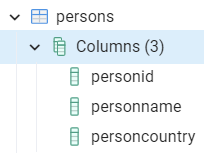
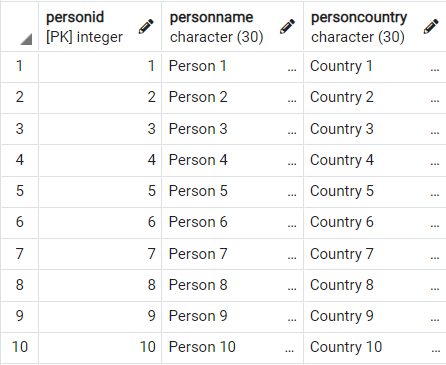
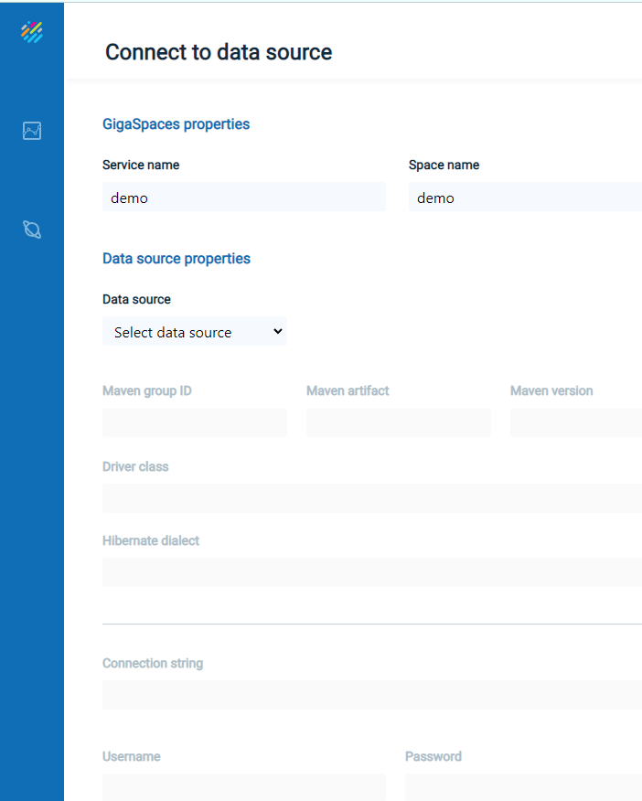
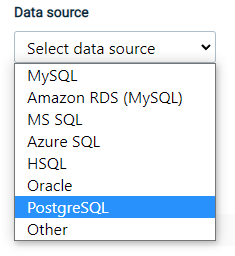
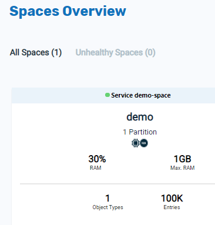
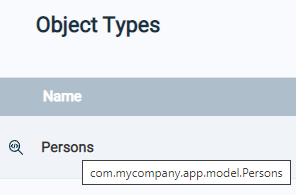
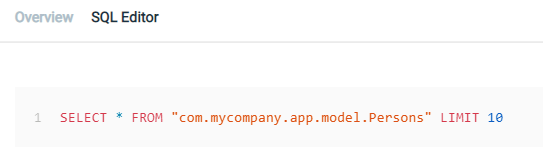
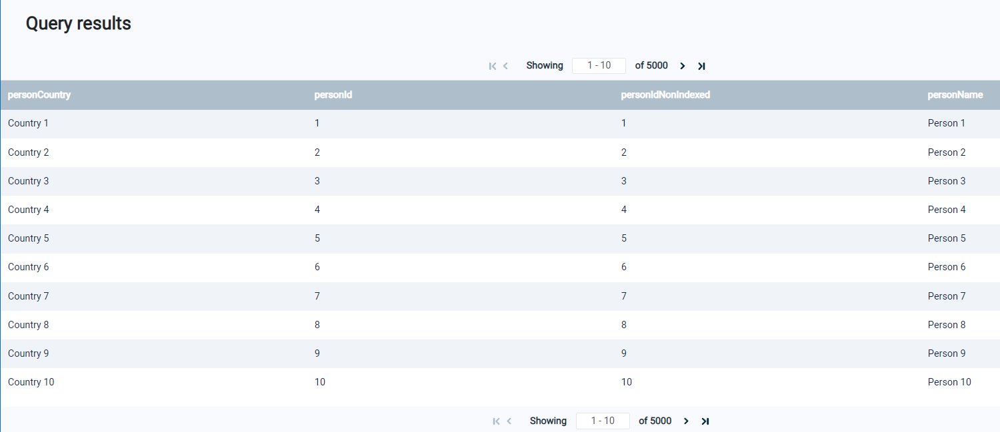

Getting Started with GigaSpaces SmartCache
This topic is a hands/on introduction to GigaSpaces SmartCache.
What is GigaSpaces SmartCache?
SmartCache is a high-performance, highly configurable caching mechanism that speeds up your application processing. Data is brought into the GigaSpaces in-memory grid, where it can be accessed at extreme speed.
What Will we do in These Examples?
We will present three examples using SmartCache and Postgres tables. These examples are organized into three sections:
Load a Database into the GigaSpaces Grid:
- Prepare the hands/on environment with GigaSpaces and prepare a Postgres database table.
- Load the Postgres table into the GigaSpaces grid and perform SQL operations.
Port a standard Java application using a database, to the GigaSpaces grid.
Use the index feature of GigaSpaces to optimize the performance of an application.
Prepare the Hands/On Environment
Prerequisites
These examples run on a Unix or Windows machine with the following capabilities:
-
3 GB RAM
-
4 GB disk
-
Java 8 or 11
-
Scala 2.11
-
Maven 3.1+
Downloads
-
Download GigaSpaces Smartcache. Use the default version, which is the latest version of the product.
-
Extract the zip file into a location on your PC.
-
In the home directory, enter a license key of tryme:
-

The trial license is valid for 24 hours.
-
Install Postgres on your PC. Be sure to include the pgAdmin component of Postgres.
Load a Database Table into the Grid
In this example, we will create a Postgres database, populate it with some data, and pull the data into the GigaSpaces grid. We will then perform some SQL operations on the grid data.
Create a Postgres Database with Some Sample Data
Using the pgAdmin tool, under the default database of postgres, create the Persons table and run the following commands to create 100,000 similar records. We will use these records later to test the speed of a SQL query.
drop table Persons;
CREATE TABLE Persons
(personId int PRIMARY KEY,
personIdNonIndexed int,
personName char(30),
personCountry char(30));
delete from Persons;
do $$
begin
for r in 1..100000 loop
insert into Persons (personId , personIdNonIndexed, personName, personCountry)
VALUES (r,r,concat('Person ', r), concat('Country ',r));
end loop;
end;
$$;
select * from Persons limit(10);
The table schema looks like this:

The table data appears as follows:

Obtain the Connection String
The connection string of the database is used by GigaSpaces and Java JDBC programs to access the database. The connection string can be accessed as follows:
Right-click on the Postgres server and click on Properties.... In the Properties dialog box, click on Connection.

Based on this information, the JDBC connection string is defined as follows:
jdbc:postgresql://localhost:5432/postgres
Launch the GigaSpaces Manager
Open a command line in the bin directory of your GigaSpaces installation, and run this command:
gs host run-agent --auto
After a few moments, this will open a browser window:

Change the URL to the following:
http://localhost:8090
The Ops Manager window will open:

Connect to the Database and Deploy the GigaSpaces Service and Space
Click on Connect to data source, to see the Data Connectivity window:

In order to connect to the Postgres database, proceed as follows.
Select the data source as Postgres:

Enter the connection string for the Postgres database, and the Postgres user/password. , and press

In the Advanced section, remove the limit of the number of records in the Space:

Press Next and the Persons table will display:

Click on Deploy, then choose the Automatic deployment method:

A screen will display indicating that the deployment process is underway:

When the deployment is successful, the following message will appear:

View the Resulting GigaSpaces Objects
On the side menu, click on the Services tab:
This will display the services that were created as a result of the deployment:

Click on the Spaces tab:

to see the Spaces created by the deployment:

Click on the demo Space to see details of the Space object:

Scroll down the page to see the list of Object types in the space. In this example, there is one Object, the Persons Object. This Object corresponds to the Persons table that we created in Postgres, and appears as follows:

Click on the Persons object:

and detailed information about the Persons object will display:


Perform SQL Operations on the Object Data
Click on the SQL Editor tab to see the default the SQL command:

To make it more interesting, modify the command as follows:
SELECT * FROM "com.mycompany.app.model.Persons" order by personId LIMIT 5000
Click on Run Query to see the query results:
